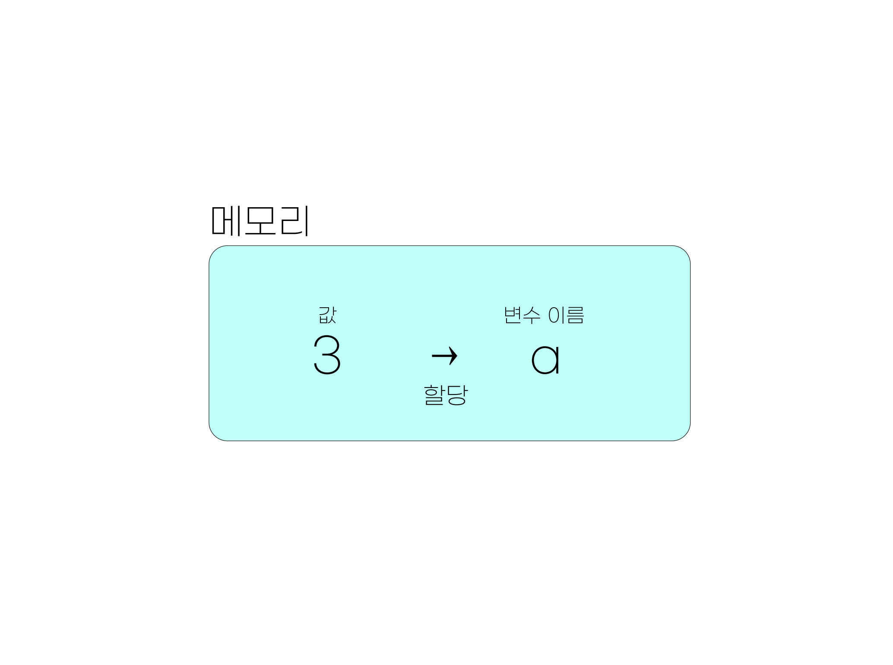
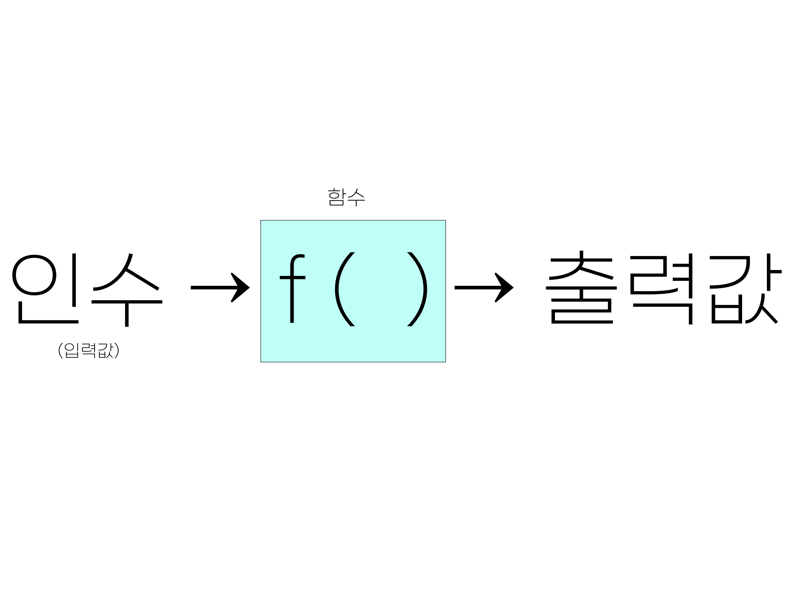

3+4[1] 7이제 여러분들은 R을 사용해 기사를 작성할 기본적인 준비가 되었습니다. 그러면 이제 R을 배워 보아야겠지요? 이 장에서는 여러분들이 R 뿐만 아니라, 이전에 프로그래밍을 접한 적인 없었다는 것을 전제하고 R의 기초 문법, 그 중에서 앞으로 본 교재 내용을 학습하는데 최소한으로 필요한 만큼만을 설명하려고 합니다. 만약 여러분이 프로그래밍이나 R에 대한 기초적인 지식이 있다면, 이 장을 읽지 않거나, 아니면 빠르게 훑어보기만 해도 다음 장부터 나오는 내용을 이해하는데 큰 문제가 없을 것입니다.
프로그래밍에 익숙지 않은 분들은 컴퓨터 언어를 새로 배워야 한다는 것이 대단히 부담스러울 수도 있지만, 사실 R의 문법은 그 어떤 프로그래밍 언어보다도 일반인들에게 직관적이고, 심하게 이야기하면 약간 복잡한 계산기를 다루는 느낌이라고 생각하셨도 좋습니다. 여기서는 R을 적어도 계산기처럼 사용할 수 있도록 해 주는 기초 문법들을 몇 가지 배울 것입니다. 사실 우리는 R 문법 그 자체를 깊게 배우지는 않을 것인데요, 곧 tidyverse라는 일종의 대체문법을 이용할 것이기 때문이죠. tidyverse는 여러가지 이용의 편리함 때문에, R의 원래 문법을 사실상 대체한 표준처럼 되어 버렸기 때문에, R 고유의 문법을 깊이 배우지 않는다고 하더라도 너무 걱정할 필요는 없습니다.
그러나, 아무리 우리가 tidyverse 문법을 사용할 것이라고 하더라도 여전히 R을 사용하는 것은 변함이 없기에 몇 가지 기초 문법은 익숙하게 알고 있어야 합니다. 다행이도, 그 종류가 많지는 않습니다.
R의 작동 방식을 이해하기 위해서, 먼저 컴퓨터가 작동하는 방식에 대해서 간단하게만 복습해 봅시다. 컴퓨터에 데이터를 저장되는 곳은 크게 세 군데가 있습니다.
연산장치(CPU, GPU) - 메모리 - 저장장치(HDD, SSD)
이는 ’악마의 두뇌’를 가졌다고 일컬어지기도 하는 저 유명한 수학자 존 폰 노이만(John von Neumann; 1903-1957)이 고안해 낸 컴퓨터의 구조입니다. 아직 소개하지 않았지만, 여러분이 사용할 데이터들은 HDD, SSD와 같은 저장 장치에 살고 있습니다. 파일을 저장한다는 행위는 여러분들도 익숙하실 것이라고 믿습니다. 하지만, 여러분들이 데이터를 이용해서 어떤 계산을 하고 싶다면, 그 계산은 저장 장치가 아니라 ’연산장치’에서 일어납니다. CPU도 아마 많이 들어보셨을테고, 최근 인공신경망(ANN)이나, 암호화폐 채굴이 CPU 대신 GPU라는 연산장치 위에서 돌아간다는 이야기도 들어보셨을 것입니다. CPU건, GPU건, 컴퓨팅이라는 것은 결국 그 ’연산장치’들이 어떤 계산을 해 주기를 바라는 것이지요.
문제는 저장장치에 있는 데이터를 연산장치가 바로 사용하는 것이 아니라는 것입니다. 연산장치가 계산을 하기 위해서는 중간 단계에 해당하는 메모리 위에 값이 기록되어야 합니다. 그리고 아마도 여러분들이 알고 계실 것처럼, 메모리에 기록된 데이터는 휘발합니다. 즉, 컴퓨터 전원이 꺼지면 없어지는 것이죠. 이 때문에 저장장치들이 필요합니다.
그런데, 메모리에 대해서는 전원이 꺼지면 데이터가 휘발된다는 것 말고도꼭 알아야 하는 것이 있습니다. 메모리 위에 기록된 값은 ’이름’이 없으면 존재하지 않는 것이나 다름 없다는 사실입니다. 이게 무슨 말인지 알기 위해 다음과 같은 예를 살펴 봅시다.
3+4[1] 7이러한 연산이 이루어지기 위해서는 3이라는 ’값’과 4라는 ’값’이 메모리에 먼저 기록되어야 합니다. 그 다음에 연산 장치가 메모리에 저장된 두 값을 더하는 ’연산’을 해 준 후, 그 결과 값이 7을 메모리 위에 기록합니다. 우리는 메모리 위에 기록된 결과를 모니터를 통해 보는 셈입니다. 그런데, 문제는 3, 4, 7이라는 모든 값에 별도의 이름을 붙이지 않았다는 것이지요. 앞서 말했듯이 ’이름’이 없는 값은 존재하지 않는 것이나 다름 없습니다. 따라서, 우리는 메모리에 쓰여진 이 값들을 다시 사용할 수 없습니다. 모니터에서 한 번 확인하고 날려보낸 것입니다.
이는 반대로 이야기 하면, 이름을 부여한다면, 적어도 이름을 부여하는 프로그램, 즉 우리의 경우 R을 켜 놓은 동안은 재사용할 수 있다는 것입니다. 위의 프로그램을 다시 써 보죠.
a <- 3
b <- 4
c <- a + b
print(c)[1] 7모니터에서 확인하는 결과는 같습니다. 그러나 우리는 몇 가지 작업을 더 했는데요, 3과 4를 각각 a와 b라는 이름에 할당(assign) 했습니다. 이름을 부여한 것이지요. 또 a에 해당하는 값과 b에 해당하는 값을 더한 결과 역시 c라는 이름에 할당했습니다. 이제 이 값들은 이름이 있으니 R을 켜둔 동안은 다시 불러 사용할 수 있는 것입니다.
a * b[1] 12다음 두 가지를 꼭 기억하세요. 이를 기억하고 있는 것은 앞으로 불필요한 에러를 피하는데 큰 도움이 됩니다.
이제 앞으로 사용할 몇 가지 용어를 정의하도록 하죠.
값(value): 데이터 그 자체
변수(variable): 거기에 붙은 이름
할당(assign): 값을 변수로 만드는 행위. R에서는 <- 부호를 사용함. (사실은 =을 사용할 수도 있지만, 구분하겠습니다.)

사람의 언어에 비유해서 설명하자면, 값과 변수는 명사, 또는 목적어에 해당합니다. 많은 경우에는 이렇게 주어진 대상에 어떤 행위를 하고 싶어하지요. 우리는 그것을 연산이라고 합니다. 그리고 그러한 연산을 문법으로 표현한 것을 함수(function)라고 하지요. 인간의 언어에서라면 함수는 동사에 해당합니다.
그림
우리는 위의 예에서 이미 함수를 보았습니다. print()가 그것입니다. 이것은 주어진 값을 콘솔에 출력하는 동작을 의미하는 것이니 동사라고 할 수 있습니다. 그러면 동사와 명사를 구분하듯, R에서 변수와 함수를 구분할 수 있을까요? 구분할 수 있습니다. 여러 방법이 있지만, 가장 간단한 방법은 문자열 뒤에 괄호가 있는지 보는 것입니다. 변수는 괄호가 없습니다. 하지만, 함수는 print()처럼 괄호가 있지요.
괄호는 왜 있는 것일까요? 괄호 안에 무언가를 써넣어야 하기 때문입니다. 즉, 함수가 표현하는 행위의 대상이 되는 목적어를 집어 넣어야 하기 때문이죠. 예컨대 print(c)에서 c라는 변수는 바로 그 목적어에 해당하요. 앞서 값이나 변수가 목적어의 역할을 하게 될 것이라고 했던 것을 기억할 것입니다. print(c)를 사람의 언어로 표현하면 다음과 같습니다.
c를 콘솔에print()하라.

이렇게 값이나 변수가 함수가 하는 연산의 대상이 되면, 즉, 함수의 괄호 안에 들어가면, 이를 입력값(input), 또는 인수(argument)라고 합니다. 입력값을 받았으니 함수는 연산의 결과로 출력값(output)을 내어놓겠지요. 사실 더 정확한 표현은 다음과 같습니다.
print(x=c)[1] 7여기서 x는 print()라는 함수의 매개변수(parameter), c는 그 매개변수에 집어넣은 인수, 또는 입력값입니다. 매개변수는 print()라는 함수가 그 내부에서 사용하는 변수입니다. print()라는 함수는 내부에서 x라는 변수를 이용해 행위를 하지, c라는 함수 밖에 존재하는 변수에 대해서는 알지 못합니다. 그런데 x=c라고 하는 순간, 이용자는 함수에게 “네가 이용할 x가 바로 바로 c라는 변수에 들어있는 값이야”라고 연결해 주는 것입니다.
[함수와 인수](pics/install/parameter_argument.pngㅑ{width=50%}
그러면 print()는 자신이 이용하는 x라는 그릇에 c에 이미 연결되어 있는 값을 담고 그것을 출력하는 행위를 하게 됩니다.
그런데 왜 첫번째 예에서는 x=을 생략하고 print(c)라고 했는데도 작동했을까요? 그것은 print() 함수 자체가 첫번째로 입력한 숫자를 x에 대응하는 인수로 자동으로 인식하도록 프로그램 되어 있기 때문입니다. 무언가를 출력하라고 하는 명령은 수없이 사용하게 될텐대, 매번 매개변수를 반복행 하면 너무 귀찮겠지요.
그런데, 모든 함수가 인수를 필요로 하는 것은 아닙니다. 자연언어에서 동사 역시 자동사와 타동사로 구분되는 것과 같은 이치입니다. 예컨대 다음과 같은 함수는 인수 없이 실행 됩니다.
getwd()getwd()라는 함수가 working directory 즉, 현재 R이 작업을 하고 있는 컴퓨터의 경로를 표시하는 동작을 의미하니, 인수가 따로 필요하지는 않겠지요. 어떤 경우에는 함수가 인수를 필요로 하지만 (즉, 타동사 이지만), 인수를 쓰지 않아도 작동하는 경우가 있습니다. 그런 경우에는 함수가 자신이 필요로 하는 인수에 대해 디폴트 값을 가지고 있는 경우 입니다. 즉, 사용자가 아무 인수도 주지 않으면 자동으로 인수로 가정하는 값이 있는 경우도 있다는 것입니다. 우리가 “밥 먹어”하는 대신 상대방이 알아들을만 한 상황에서는 “먹어”라고 하는 것과 비슷한 이치입니다.
R은 여러가지 종류의 데이터를 다룰 수 있습니다. 하지만 컴퓨터 프로그램은 인간처럼 연산을 하면서 주어진 데이터가 숫자인지, 문자인지 직관적으로 결정할 능력을 가지고 있지 않습니다. 연산이 이루어지기 전에 해당 데이터가 숫자인지, 문자인지, 미리 정해놓아야 합니다. 이렇게 정해 놓은 데이터의 종류를 데이터의 타입(Type)이라고 합니다. 그와는 달리, 타입을 가지고 있는 복수의 값을 엮어 놓는 방식도 여러가지가 있습니다. 우리는 그 다양한 방식들을 데이터의 구조(Structure)라고 부를 것입니다. 데이터의 타입과 구조는 매우 많은 종류가 있고, 심지어 이용자가 만들어낼 수도 있는데, 여기서는 일반적인 데이터 분석 및 시각화를 위해 자주 사용하게 되는 것만 짚고 넘어가려고 합니다.
numeric: 1, 1.2, -3.42와 같이, 우리가 일상생활에서 사용하는 실수의 개념에 가깝습니다.character: 이는 문자를 의미합니다. “a”, “b”, “3-2”와 같이 따옴표로 둘러싸 문자를 표현합니다. 사람의 눈에는 숫자이더라도 “1”라고 쓰면 R은 이를 문자로 인식합니다. 따라서 "1"-"2"와 같은 명령어를 치면 에러가 발생합니다.logical: 이는 TRUE 또는 FALSE 두 개의 값을 갖는 논리 연산을 위한 데이터 타입 입니다. 따옴표를 사용하지 않고, 대문자로만 표기했다는 것에 유의하세요. R은 소문자와 대문자를 구분하기 때문에, True 또는 False라고 쓰는 순간 완전히 다른 의미를 가지게 됩니다. 또 "TRUE", "FALSE"라고 쓴다면, logical 타입이 아닌 character 타입으로 인식됩니다. logical 타입은 다른 언어에서는 Boolean 타입이라고 불리기도 합니다.그 외에 특별한 데이터가 있습니다. NA는 값이 없음을, NaN은 계산 결과가 숫자로 표현될 수 없었음을 이야기 합니다. 예컨대, 0을을 0으로 나누려고 한다면, 그 결과값은 NaN이 됩니다.
0/0[1] NaN정수를 뜻하는 integer, 복소수를 뜻하는 complex 타입도 있지만 당장 다룰 일이 별로 없을 것이므로, 건너뛰도록 하겠습니다. 또 하나 중요한 데이터 타입으로는 factor라는 것이 있는데요, 이것은 바로 이해가 어려우니, 나중에 사용할 때 설명하도록 하겠습니다.
R의 특이한 점 중 하나는 한 개의 값이 따로 존재한다는 개념이 없다는 것입니다. 이상하게 들리겠지만, 일단 이해를 위해 다음과 같은 예를 보도록 하죠.
2[1] 2콘솔에서 2라고 치고 엔터를 누르면, R은 이 값을 그대로 반복해서 보여주는데요, 그 옆에 [1]이라고 쓰여져 있는 것이 보일 것입니다. 그것은 2가 값들을 모아놓은 집합의 첫번째 요소라는 뜻입니다. 우리에게는 그냥 하나의 숫자 같지만, R은 여러개의 값을 담을 수 있는 그릇이 있는데, 그 안에 들어있는 값이 하필이면 한 개 였고, 그 한 개의 값이 첫번째 요소이니(물론 마지막 요소이기도 합니다) [1]이라고 표시한 것입니다. 이렇게 R은 항상 모든 값이 여러개의 값을 가질 수 있는 그릇에 담겨있다고 생각하고, 그릇이 없는 값 같은 것은 존재하지 않는다고 봅니다. 이렇게 값들을 담을 수 있는 그릇을 데이터 구조(structure)라고 부릅니다.
R이 사용하는 가장 간단한 데이터 구조는 벡터 입니다. 벡터는 같은 데이터 타입을 가진 값들의 순서가 있는 집합이라고 생각하면 좋습니다. 사실 위에서 본 [1] 2라는 출력 값은 “2라는 값 하나만 가지고 있는 벡터”라는 뜻입니다. 이제 여러개의 값이 담겨 있는 벡터를 보겠습니다.
vecNum <- c(1,2,3,4,5)
vecNum[1] 1 2 3 4 5vecChar <- c('a', 'b', 'c')
vecChar[1] "a" "b" "c"위에서 보듯 c()라는 함수를 이용해서 여러 개의 값을 만들 수 있습니다. 또 값을 변수에 할당하는데 사용했던 <- 연산자를 이용해 벡터 전체를 하나의 변수에 할당할 수도 있습니다. 위의 예에서 vecNum은 numeric 데이터 타입만을 가지고 있는 벡터이지만, vecChar의 경우에는 character 타입으로만 이루어진 벡터입니다.
리스트는 ‘키(key)’라고 불리는 데이터의 이름과 그에 상응하는 ’값(value)’ 사이의 연결로 표현되는 데이터 구조 입니다. 이렇게 말하면 조금 난해하지만, 예를 보면 간단합니다.
persons <- list(id = c(1, 2, 3),
gender = c("Male", "Female", "Female"),
height = c(173, 165, 170))
persons$id
[1] 1 2 3
$gender
[1] "Male" "Female" "Female"
$height
[1] 173 165 170위의 예에서 c(1,2,3)과 같은 정보는 ’값’에 해당하고, id, gender, height과 같은 값들은 이 값들과 연결된 ’키’에 해당합니다. 이렇게 리스트를 만들어 놓으면 벡터보다 직관적으로 데이터의 관심있는 일부분을 불러올 수 있습니다. 예컨대 위에서 만든 리스트에 담긴 3명에 대한 정보 중, 성별만을 알고 싶다면 다음과 같이 명령하면 됩니다.
persons$gender[1] "Male" "Female" "Female"위의 예에서 바로 알 수 있듯이 $ 연산자는 리스트에서 특정 키에 해당하는 값을 부르기 위한 역할을 합니다. 당장은 리스트 보다 벡터를 자주 사용하게 되겠지만, 곧 리스트가 유용한 경우가 자주 발생하게 됩니다.
데이터 프레임은 우리가 잘 알고 있는 표(table)를 의미합니다. 예컨대 위에서 사용한 리스트의 예를 데이터 프레임으로 만들어 볼까요?
df <- data.frame(id = c(1, 2, 3),
gender = c("Male", "Female", "Female"),
height = c(173, 165, 170))
df id gender height
1 1 Male 173
2 2 Female 165
3 3 Female 170우리에게 익숙한 테이블 모양으로 출력이 된다는 것을 알 수 있습니다. 예컨대 데이터로 엑셀 파일이 있어 이를 R을 이용해 분석하려 한다면, 이렇게 데이터프레임으로 인식시키는 것이 가장 직관적이겠지요. 데이터 프레임은 여러분들이 가장 자주 보게 될 데이터 구조 입니다.
앞서 리스트에 대해 이야기 하면서 $ 연산자를 통해 데이터의 일부만 보는 작업의 예를 보았습니다. 이렇게 데이터의 일부만 보는 행위를 서브세트라고 합니다. 서브세트를 분석 목적에 맞게 잘 하는 것은 데이터 과학에서 가장 중요하고, 자주 하게 되는 테크닉 입니다. 우리는 여기서 배우는 서브세트 기술 보다 조금 더 명료한 방법을 앞으로 사용하게 되겠지만, 이를 100% 피해갈 수는 없으므로, 가장 기초적인 것만 보도록 하겠습니다.
일단 벡터의 서브세트를 이해하기 위해 다음과 같은 예를 보겠습니다.
a <- c(4, 5, 6, 7, 8)
a[2][1] 5이렇게 벡터를 서브세트 하기 위해서는 간단하게 [] 안에 몇 번째 값을 보고 싶은지를 써 주면 됩니다. 이런 것도 가능합니다.
a[2:4][1] 5 6 7여기서 2:4는 “2에서 4까지의 정수”라는 뜻으로 c(2,3,4)라고 쓴 것과 동일한 효과를 갖습니다. 따라서, 두번째, 세번째, 네번째 값이 서브세트 된 것이지요. 또 이런 방식으로 특정 순서에 있는 값만 제외하는 것도 가능합니다.
a[-2][1] 4 6 7 8이번엔 아까 썼던 것과 같은 리스트 예를 사용해 보겠습니다.
persons <- list(id = c(1, 2, 3),
gender = c("Male", "Female", "Female"),
height = c(173, 165, 170))아까 persons$gender라고 써서 subset하는 방식으로 봤습니다. 똑같은 효과를 갖는 명령어로 다음과 같이 쓸 수 있습니다.
persons[["gender"]][1] "Male" "Female" "Female"대괄호를 두번 써 주었다는 것(‘[[’)에 유의해 주세요. 정확하게 같은 결과가 나오지만, 이 때는 키(key)를 따옴표를 써서 문자열로 제시해 주어야 합니다. 사실 persons$gender는 이 코드를 조금 더 간단하게 쓰기 위한 약어라고 생각하시면 되겠습니다. 사실 gender는 persons 리스트에서 두번째 키이기 때문에 다음과 같이 써도 결과는 같습니다.
persons[[2]][1] "Male" "Female" "Female"대괄호를 한번 쓰는 것은 조금 다른 의미를 갖습니다.
persons[2]$gender
[1] "Male" "Female" "Female"결과에서 보는 것처럼, persons[[2]]는 persons라는 list의 두번째 키/값의 쌍에서 값만 되돌려달라는 의미입니다. 따라서 되돌려받는 값은 값에 해당하는 벡터, c("Male", "Female", "Female")이 됩니다. 반면, persons[2]는 두 번째 키/값의 쌍 전체를 돌려달라는 돌려달라는 의미이므로, 반환값 역시 리스트인 list(gender = c("Male", "Female", "Female")) 형태가 됩니다. 따라서, persons[2:3]과 같은 표현도 자연스럽게 정의가 되겠지요.
사실 여러분은 데이터프레임을 서브세트 할 일이 가장 많을 것입니다. 사실 데이터프레임을 서브세트 하는 방식은 리스트와 매우 유사합니다. 아까 만든 df 데이터프레임을 생각해 보면,
df$gender[1] "Male" "Female" "Female"는 리스트처럼 gender열의 값에 해당하는 벡터를 돌려주고, 이는 다음과 같습니다.
df[['gender']][1] "Male" "Female" "Female"반면 숫자를 이용한 서브세팅도 리스트와 유사합니다.
df[[2]]라고 하면 두번째 열(column)에 해당하는 벡터를, df[2]라고 하면 두번째 열을 그 값에 해당하는 벡터값만이 아니라, 열의 이름인 gender가 더해진 열 한 개짜리 데이터프레임을 돌려줍니다. 그런데, 이런 방식 말고 리스트와 다른 방식의 서브세팅도 있습니다. 이는 데이터프레임을 다룰 때에는 값을 취할 행과 열을 모두 지정해 주는 경우도 많기 때문이지요. 그 방식은 다음과 같습니다.
df[2,3][1] 165이 명령어는 두 번째 행, 세 번째 열에 해당하는 값을 취하라는 뜻입니다. 그렇다면 앞에서 배운 : 연산자를 이용해 다음과 같은 표현도 가능합니다.
df[1:2, 2:3] gender height
1 Male 173
2 Female 165물론, 이는 첫번째 부터 두번째 행, 두번째부터 세번째 열에 해당하는 값을 데이터프레임 형태로 되돌려달라는 의미입니다.
이렇게 연속된 숫자를 이용한 서브세팅 말고 첫번째와 세번째 열에 해당하는 값을 돌려달라고 할 수도 있겠지요? 이 때는 숫자로 이루어진 벡터를 이용합니다.
df[ , c(1,3)] id height
1 1 173
2 2 165
3 3 170그런데 이번에 행을 지정하는 부분 (쉼표 앞 부분)이 비어 있습니다. 이는 행 전체에 해당하는 정보를 달라는 것을 뜻합니다.
이것 말고도 서브세팅에 이용할 수 있는 기술은 몇 가지 더 있는데요, 우리는 사실 이 방식을 사용하지 않을 예정입니다. 왜냐하면, 이렇게 R이 기본적으로 제공하는 방식은 가독성이 그리 좋지 않아, 몇 일만 지나도 내가 무엇을 하려고 했던 것인지 잊어버리는 경우가 많습니다. 예컨대, 위의 예에서 첫번째, 세번째 열이 무엇이었는지 기억하는 사람은 별로 없겠지요. 또 내가 스스로 쓴 코드를 이해하기 어렵다는 것은 다른 사람이 이해하기는 더 어렵다는 뜻입니다. 이는 협업을 자주 해야 하는 데이터 저널리즘에서는 치명적인 문제라고 할 수 있습니다. 따라서 우리는 다음 장에서 가독성과 협업 효율성이 높은 다른 방식을 이용할 것입니다.
여기서 말하는 조건은 쉽게 말하면 질문 입니다. 코딩을 하다보면 질문을 할 일이 정말 많은데요, 특히 우리가 자주 사용하는 조건(Predicate)을 이용한 질문들은 그 대답이 logical 값, 즉, TRUE 또는 FALSE가 됩니다. R에게 참, 거짓을 물어보는 방식은 아주 많은데요, 그 중 아주 많이 사용하는 것들로는 다음과 같은 것들이 있습니다.
==,!=,%in%,is.na(),>,>=,<,<=
==는 “두 값이 같은지”를 물어보는 것입니다. 예컨대,
2 == 2[1] TRUE2 == 3[1] FALSEa <- 2
a == 2[1] TRUE등이 가능합니다. 마지막 예에서 알 수 있듯이, == 앞 뒤에는 값이 와도, 변수명이 와도 좋습니다. 여기서 등호가 2개라는 것에 유의하세요. R에서 =와 ==는 전혀 다른 것입니다. =는 <-와 유사하게 할당의 의미로, ==는 질문의 의미로 사용합니다.
반면, !=는 “구 값이 다른지”를 물어보는 것이겠지요. 예컨대,
2 != 3[1] TRUE두 값이 다르기 때문에 이에 대한 대답은 TRUE 입니다. 반면 2!=2의 답은 FALSE겠지요. !=은 등호 앞에 !를 붙여서 만드는데, !는 R에서 not을 의미합니다.
%in%은 해당 연산자 앞의 값이 연산자 뒤에 나오는 벡터에 속하는지를 물어보는 조건 입니다. 예컨대 다음과 같은 방식입니다.
2 %in% c(2,3,4,5)[1] TRUE6 %in% c(2,3,4,5)[1] FALSE마지막으로 in.na()는 결측값이 있는 곳에 TRUE를 되돌려주는 조건입니다.
is.na(c(2,3,NA,5))[1] FALSE FALSE TRUE FALSEis.na()는 앞에서 다룬 조건들과 몇 가지 점에서 조금 다릅니다. 먼저, 질문을 하는 방식에 두개의 다른 값을 이용하는 것이 아니라 하나의 값(위의 예에서는 벡터 c(2,3,NA,5))만을 사용합니다. 둘째, 그렇기 때문에 조건의 형태가 일반 함수 형태로 되어 있고, 괄호 안에 질문의 대상이 되는 값을 써 넣도록 되어 있습니다. 셋째, 대답이 하나의 TRUE 또는 FALSE가 아니라, 벡터의 모든 요소에 대해서 주어집니다. 세번째 요소만 결측값이니, 답이 c(FALSE, FALSE, TRUE, FALSE)가 되는 것이지요. 만약 반대로 “결측값이 아닌 곳”을 찾으려 한다면, !이 부정을 의미한다고 하였으니 다음과 같이 쓰면 되겠지요.
!is.na(c(2,3,NA,5))[1] TRUE TRUE FALSE TRUE